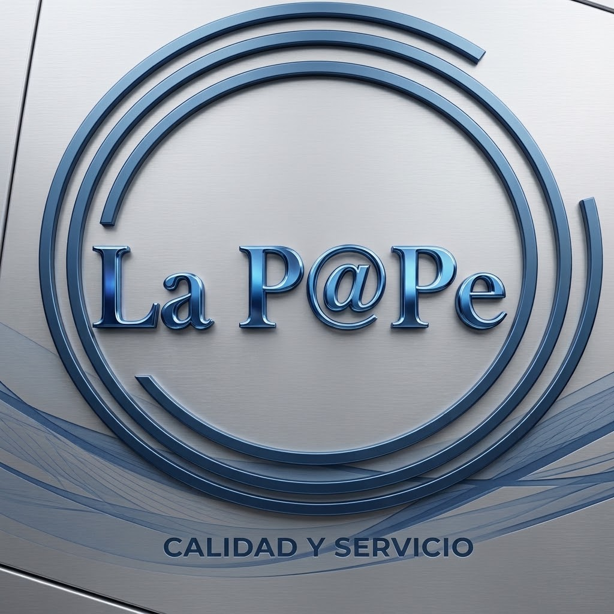

Recibo de luz (CFE) $
Consulta tu recibo – CFE (entrada oficial)
Datos que pide: Nombre del servicio, número de servicio, teléfono celular y correo electrónico.

Trámites oficiales de México en un solo lugar: hazlos en línea o agenda tu cita sin gestores ni intermediarios.
Trámites oficiales y pagos de servicios, sin gestores ni intermediarios.
Luego filtra por categoría con los botones de abajo.
Empieza aquí si no sabes dónde va tu trámite.
Buscador oficial de trámites federales y programas sociales: CURP, acta de nacimiento, pasaporte, semanas cotizadas del IMSS y constancia de situación fiscal.
En líneaInicio de sesión único para trámites de la Ciudad de México, incluida la revisión del registro de licencias.
Consulta tu recibo – CFE (entrada oficial)
Datos que pide: Nombre del servicio, número de servicio, teléfono celular y correo electrónico.
Actas y CURP. Los trámites estatales se muestran con CDMX como referencia.
Consulta e imprime tu CURP con tus datos personales.
ConsultaLa corrección se gestiona ante el Registro Civil (vía administrativa o judicial según el caso). Confirma el trámite en el portal.
Datos que pide: CURP del acta, nombre completo de alguno de los padres, datos de quien solicita el acta y un correo para enviar el archivo. Incluye una impresión a color.
Acta de matrimonio – Ventanilla Puebla
Datos que pide: Nombre de uno de los contrayentes. La copia certificada se solicita en línea vía Plataforma Nacional con Llave MX; costo $170 y respuesta en 72 h.
Licencias, vehículos y pasaporte. Referencia: Ciudad de México.
Inicia el trámite en línea y luego agenda módulo para documentos, foto y huellas.
Agenda de citaAgenda tu cita en módulos fijos, móviles y de alcaldías de la Secretaría de Movilidad CDMX.
ConsultaInformación oficial del programa, calendario y requisitos; las citas se agendan en verificentros autorizados.
ConsultaConsulta qué vehículos no circulan hoy en la Ciudad de México.
Consulta / pagoConsulta y pago de infracciones de tránsito vía Tesorería CDMX.
Agenda de citaAgenda tu cita para pasaporte. El servicio de cita es gratuito: la SRE advierte no pagar a intermediarios.
Tenencia – Recaudación en Línea Puebla (vía oficial vigente)
Datos que pide: Placa, número de serie y número de la tarjeta de circulación.
El enlace anterior (PagoFácil) muestra error al cargar; esta es la única página oficial autorizada según la SPFA.
Antecedentes, SAT, consumo y finanzas.
Registra, consulta o cancela citas (inscripción al RFC, e.firma de personas físicas, entre otros). Puede haber fila virtual si no hay disponibilidad.
En líneaPortal oficial del SAT para trámites, servicios, e.firma y Constancia de Situación Fiscal.
En línea / consultaPresenta quejas y denuncias ante la Procuraduría Federal del Consumidor.
En línea / consultaPresenta quejas y consulta información sobre servicios financieros.
Ficha informativa – Ventanilla Puebla
Datos que pide: Nombre completo, RFC, CURP y domicilio.
El portal de Recaudación en Línea muestra error al cargar y por eso no se incluye; la ficha de Ventanilla Puebla tiene la información y sedes (el trámite es presencial).
Solicitudes de información pública a través de la Plataforma Nacional de Transparencia.
IMSS e ISSSTE.
Consulta si estás vigente en el IMSS (también en la app IMSS Digital).
Agenda de citaAgenda cita médica familiar en línea o en la app IMSS Digital.
En líneaTramita o localiza tu NSS en línea.
ConsultaConsulta tus semanas cotizadas ante el IMSS.
Datos que pide: CURP, nombre completo, dirección, teléfono celular de dos personas y correo electrónico.
El portal MiVacuna anterior ya no está disponible en esa ruta. Pregunta en La Pape por la vía vigente.
Talones de pago – Oficina Virtual ISSSTE
Datos que pide: Número de pensión, código de adeudo y mes a adquirir.
Vivienda, retiro y empleo.
Consulta tu saldo, puntos y precalificación de crédito.
ConsultaDescubre en qué Afore está registrada tu cuenta individual.
ConsultaInformación oficial sobre Afores, trámites y derechos de los trabajadores.
ConsultaBolsa de trabajo oficial: busca vacantes, registra tu CV y postúlate gratis.
Datos que pide: CURP, año de inscripción, entidad federativa, teléfono celular y código postal.
Datos que pide: CURP y contraseña. Portal exclusivo para Magisterio Estatal y Dependencias Centralizadas.
Credencial para votar y servicios consulares.
Agenda citas consulares, incluida la Credencial para Votar desde el extranjero.
ConsultaPrograma oficial del voto desde el extranjero.
Citas – INE (entrada oficial vigente)
Datos que pide: Acta de nacimiento, identificación con fotografía, comprobante de domicilio, 2 teléfonos y correo electrónico.
El enlace anterior (dominio IFE) ya no funciona; esta es la entrada oficial vigente del INE.
Tramita tu cédula profesional electrónica en el Registro Nacional de Profesionistas.
Preinscripción – SEP Puebla (portal vigente)
Datos que pide: NIA, CURP, 3 claves CCT, NIA del hermano (si tiene), dirección y correo electrónico.
El enlace del ciclo 2021 ya no funciona; este es el portal vigente de la convocatoria.
Sin resultados para tu búsqueda. Prueba con otra palabra o revisa la sección de Pagos y servicios.
Elige tu estado en el combo y se muestran solo sus trámites. Solo se listan portales oficiales verificados (.gob.mx o sitios oficiales).
Mostrando los 32 estados + trámites federales.
https://www54.sat.gob.mx/curp/Consult $
Consulta RFC con CURP, año de inscripción, entidad, teléfono y código postal.
https://www.gob.mx/ActaNacimiento/ $
Emisión de copias certificadas en línea.
https://www.miregistrocivil.gob.mx/ $
Plataforma Nacional del Registro Civil; depende de que el acta esté digitalizada.
https://constancias.oadprs.gob.mx/ $
En línea con CURP. No sustituye a la constancia estatal cuando se pide la del estado.
Entrada oficial vigente para agendar cita de credencial para votar.
Consulta y pago; también en la app CFE Contigo.
https://oficinavirtual.issste.gob.mx $
Oficina Virtual ISSSTE, sección Talones de Pago; el enlace viejo issstenet2 ya no se incluye.
Gobierno del Estado de Aguascalientes / eServicios $
El portal oficial lista "Solicitud de Actas (Nacimiento, Matrimonio y Defunción)".
Fiscalía General del Estado de Aguascalientes $
Portal oficial de la Fiscalía; confirmar dentro del portal si la constancia se tramita en línea o presencial (la vista extraída no mostró el formulario).
Gobierno del Estado de Aguascalientes, Portal de trámites $
El portal lista "Pago Anual de Derechos de Control Vehicular"; el cobro vigente es control vehicular, no tenencia como tal.
Instituto de Educación de Aguascalientes (IEA) $
Portal oficial del IEA; la preinscripción se publica por convocatoria en este portal.
Gobierno del Estado de Aguascalientes, Portal de trámites $
Portal oficial del estado con "Portal de trámites" y pagos en línea.
Plataforma Nacional del Registro Civil $
Vía nacional verificada; sin portal estatal propio confirmado.
RETyS Baja California, Secretaría de Seguridad Ciudadana $284.38
Trámite en línea verificado en ficha oficial: "Expedición de Constancia de Antecedentes Penales", costo $284.38, vigencia 3 meses.
Ventanilla BC, Registro Vehicular $
En Baja California es refrendo, no tenencia: ofrece "Refrendo de la Tarjeta de Circulación" anual, además de alta, baja y cambio de propietario.
Ventanilla Única de Baja California $
Hub oficial verificado, con trámites 100% digitales y presenciales/híbridos.
Plataforma Nacional del Registro Civil $
Vía nacional verificada; sin portal estatal propio confirmado.
Gobierno de Baja California Sur, Trámites y Servicios $
El hub oficial lista "Carta de Antecedentes no Penales" entre sus trámites y servicios.
Gobierno de Baja California Sur, Trámites y Servicios $
El cobro equivalente es la "Revista Vehicular" (el hub lista "Pago de Revista Vehicular"); no es tenencia como tal.
Secretaría de Educación Pública de Baja California Sur (SEPBCS) $
Portal oficial de la SEPBCS; la preinscripción se publica por convocatoria en este portal.
Gobierno de Baja California Sur $
Portal oficial del estado con sección "Trámites y Servicios" (enlaza a tramites.bcs.gob.mx).
Plataforma Nacional del Registro Civil $
Vía nacional verificada; sin portal estatal propio confirmado.
Registro Estatal de Trámites y Servicios (RETyS) de Campeche $
Hub estatal verificado en vivo; buscar dentro el pago vehicular vigente. Contribunet (Servicios Electrónicos) no se pudo abrir en esta revisión: pendiente de revalidación, no se usa como vía principal.
Preinscripciones Campeche, SEDUC $
Dominio confirmado como propiedad de la SEDUC Campeche; portal por convocatoria.
Portal Oficial Gobierno de Campeche / RETyS $
El portal campeche.gob.mx enlaza este RETyS como "Trámites Estatales".
Plataforma Nacional del Registro Civil $
Vía nacional verificada; sin portal estatal propio confirmado.
Fiscalía General del Estado de Chiapas $
Portal oficial de la Fiscalía; no quedó confirmado un formulario en línea dedicado a la constancia: confirmar la modalidad dentro del portal.
Secretaría de Hacienda de Chiapas, Ingresos $
El portal lo enlaza como "Refrendo Vehicular" y "Pago de Derechos"; el cobro vigente es refrendo, no tenencia.
Secretaría de Educación del Estado de Chiapas (SEECH) $
Portal oficial de la SEECH; la preinscripción se publica por convocatoria en este portal.
Portal del Gobierno de Chiapas $
Portal oficial con botón "Explorar Trámites y Servicios" y sección "Principales Servicios" (actas, refrendo vehicular, licencia, pago de derechos).
Plataforma Nacional del Registro Civil $
Vía nacional; depende de la entidad y de la digitalización del acta. Sin portal estatal propio confirmado.
iPagos, Secretaría de Hacienda $
No se cobra tenencia: el pago anual es la revalidación vehicular.
Preinscripciones del 3 al 13 de febrero, 3 opciones de plantel.
Portal del Gobierno del Estado ("Mi Trámite Chihuahua") $
Buscador con 972 trámites; no hay ventanilla estatal con nombre propio distinto.
Copias digitales solo de actas registradas en la CDMX. Dominio confirmado en resultados (apertura directa falló por error de red).
Constancia de antecedentes no penales / no antecedentes registrales CDMX $
Dominio confirmado en resultados (página no abierta en esta verificación).
Secretaría de Administración y Finanzas $
Pago en línea con línea de captura; subsidio 100% de tenencia si se paga refrendo en plazo.
Preinscripciones AEFCM (SEP) $
Registro en preinscripciones.aefcm.gob.mx durante convocatoria.
Cuenta única de la Ciudad: trámites digitales, expediente digital y firma electrónica.
Registro Estatal de Trámites y Servicios (RETyS) de Coahuila $
La página oficial del RETyS lista "Acta de Nacimiento, Matrimonio, Divorcio y Defunción" como trámite digital del Registro Civil en línea.
RETyS Coahuila, Carta de No Antecedentes Penales (SICNAP) $
Enlace publicado en la página oficial del RETyS: "Tramita tu constancia de No antecedentes penales con Firma electrónica totalmente en línea".
Registro Estatal de Trámites y Servicios (RETyS) de Coahuila $
En el RETyS se localiza el pago de control vehicular / refrendo anual; Coahuila no cobra tenencia.
Secretaría de Educación de Coahuila (SEDU) $
Portal oficial de la SEDU; existe además la app oficial "Preinscripciones Coahuila" para preescolar, primaria y secundaria.
Registro Estatal de Trámites y Servicios (RETyS) de Coahuila $
Hub oficial verificado en vivo, con trámites digitales del Registro Civil, carta de no antecedentes penales, carta de no inhabilitación y otros.
Gobierno del Estado de Colima $
Portal estatal verificado en vivo; entre los "Trámites y servicios más solicitados" lista "Expedición de Acta de nacimiento, matrimonio, divorcio, defunción".
Gobierno del Estado de Colima $
El mismo portal lista trámites vehiculares y "Pagos en línea"; verificar dentro el cobro vigente (refrendo/control vehicular).
Gobierno del Estado de Colima $
Portal estatal verificado en vivo. Ojo: colima.gob.mx es del Ayuntamiento (municipal), no del gobierno del estado; no usarlo como hub estatal.
Plataforma Nacional del Registro Civil $
Vía nacional; depende de la entidad y de la digitalización del acta. Sin portal estatal propio confirmado.
Catálogo de trámites del Gobierno de Durango (FGED) $
El catálogo estatal incluye el "Servicio de expedición de Carta de NO Antecedentes Penales". Es ficha de catálogo, no se confirmó un sistema de emisión en línea específico; el trámite es ante la Fiscalía General del Estado.
Portal de Pagos del Estado de Durango $
Portal oficial de pagos de contribuciones estatales. El catálogo lista tanto "Refrendo Anual" como "Tenencia Vehicular".
Gobierno del Estado de Durango (catálogo de trámites y servicios) $
Portada oficial con catálogo de "Trámites y servicios frecuentes" (refrendo, tenencia, actas, carta de no antecedentes). Sin ventanilla con nombre propio distinto.
Plataforma Nacional del Registro Civil $
Vía nacional; no se confirmó portal estatal propio de emisión en línea.
Fiscalía General de Justicia del Estado de México (FGJEM) $
Pre-gestión en línea de la constancia según el sistema FGJEM.
Tenencia Individual, SEFIN Edomex $
"Pago de Tenencia y Derechos de Control Vehicular".
Entrada oficial de la convocatoria SAID (registro feb-mar); las rutas profundas cambian por ciclo.
Ventanilla Electrónica Única de Trámites y Servicios $
Acceso con CUTS, carpeta ciudadana. Catálogo RETyS: retys.edomex.gob.mx.
Plataforma Nacional del Registro Civil $
Vía nacional. "KioscoDigital" aparece en resultados pero sin dominio .gob.mx confirmable: sin enlace.
Refrendo, Secretaría de Finanzas $
Consulta y pago con placa o REV. El pago anual es el refrendo.
Guanajuato lo llama "inscripción anticipada", no "preinscripción".
Trámites y Servicios Guanajuato $
Catálogo estatal de 842 trámites y servicios. No usa el nombre "Ventanilla Digital".
Plataforma Nacional del Registro Civil $
Vía nacional; depende de la entidad y de la digitalización del acta. Sin portal estatal propio confirmado.
Constancia de No Antecedentes Penales, sistema SIAAC (FGE Guerrero) $
Citas en línea; el trámite es presencial con cita en las delegaciones del Archivo Criminalístico.
SEFINA, Subsecretaría de Ingresos (Buzón Tributario / Pago de Tenencia) $
La portada oficial guerrero.gob.mx lo enlaza como "Pago de Tenencia" y "Pago de Impuestos Estatales".
Secretaría de Educación Guerrero (SEG) $
Entrada oficial de la autoridad educativa estatal, donde se publican las convocatorias; sin ruta profunda de registro confirmada para el ciclo.
Gobierno del Estado de Guerrero (Trámites y Servicios) $
Portada oficial con sección "Trámites y Servicios" (DeclaraNet, SEFINA, constancia de no antecedentes, agencias fiscales). Sin ventanilla con nombre propio distinto.
Plataforma Nacional del Registro Civil $
Vía nacional; depende de la entidad y de la digitalización del acta. Sin portal estatal propio confirmado.
Consulta y pago de tenencia y/o refrendo con placa y los 5 últimos dígitos del número de serie.
Secretaría de Educación Pública de Hidalgo (SEPH) $
Entrada oficial de la autoridad educativa estatal (Padres y Alumnos, Educación Básica); la convocatoria y la ruta de registro se publican ahí por ciclo.
Gobierno del Estado de Hidalgo $
Dominio confirmado como portal oficial en resultados de búsqueda. Apertura directa fallida por tiempo agotado, no reintentada; ese fallo no prueba que esté muerto. Sin ventanilla con nombre propio distinto.
Catálogo de Trámites del Gobierno de Jalisco $
Catálogo estatal donde se localiza el trámite de actas del Registro Civil.
Refrendo y Verificación, Secretaría de la Hacienda Pública $
El pago anual es el refrendo.
Plataforma Educativa / APPrende Jalisco, SEJ $
Preinscripción en app APPrende Jalisco o en este portal, sección Padres de Familia.
Integra trámites y servicios estatales y municipales en línea, con seguimiento y pago seguro.
Plataforma Nacional del Registro Civil $
Vía nacional; sin portal estatal propio confirmado.
Refrendo Digital, Secretaría de Finanzas y Administración $
No se cobra tenencia, solo refrendo anual. Ojo: michoacanrefrendo.com NO es .gob.mx y no se lista como oficial.
Preinscripciones Digitales, SEE $
Registro en línea y cita para entrega de documentos.
Ventanilla Digital de Trámites Estatales $
Verificación por cita en fuente secundaria; no se abrió directamente la portada.
Plataforma Nacional del Registro Civil $
Vía nacional; depende de la entidad y de la digitalización del acta. Sin portal estatal propio confirmado.
Gobierno del Estado de Morelos (entrada general) $
Portal oficial abierto y verificado, sin ruta profunda de pago confirmada. El pago anual se conoce como refrendo; no se inventa la URL del sistema de pago.
Gobierno del Estado de Morelos $
Portal oficial del gobierno estatal (convocatorias, programas y servicios). Sin ventanilla con nombre propio distinto.
Plataforma Nacional del Registro Civil $
Vía nacional; depende de la entidad y de la digitalización del acta. Sin portal estatal propio confirmado.
Secretaría de Administración y Finanzas de Nayarit $
Portal de la Secretaría; en resultados oficiales aparece descrito con los conceptos tenencia y refrendo. Sin ruta profunda de pago confirmada.
Servicios de Educación Pública del Estado de Nayarit (SEPEN) $
Entrada oficial de la autoridad educativa estatal; la convocatoria y la ruta de registro se publican ahí por ciclo.
Portal del Gobierno del Estado de Nayarit $
Portal oficial del gobierno estatal. Sin ventanilla con nombre propio distinto.
Panel Ciudadano, Gobierno de Nuevo León $
Incluye expedición de copias certificadas de actas del estado civil.
Panel Ciudadano, Gobierno de Nuevo León $
Constancia Digital de No Antecedentes Penales, recibida por correo en un máximo de 72 horas.
Tesorería Virtual / Instituto de Control Vehicular $
Dominio oficial de Tesorería Virtual; la ruta de pago profundo no se verificó directamente.
Preinscripciones, Secretaría de Educación NL $
Proceso en línea del 3 al 20 de noviembre.
NLínea $
Ventanilla digital con expediente único (actas del Registro Civil, entre otros).
Plataforma Nacional del Registro Civil $
Vía nacional; sin portal estatal propio confirmado.
Pago de Tenencia, Secretaría de Finanzas (SIOX) $
Genera formato de pago con placa o serie; programa "Adiós a la Tenencia".
Ventanilla Digital Puebla, "Orientación para solicitar Actas certificadas en línea" (SEGOB-35061-S) $170
En línea vía Plataforma Nacional con Llave MX; costo $170, respuesta en 72 h.
Ventanilla Puebla, "Constancia de no antecedentes penales presencial" (FGE) $
Solo información + presencial en sedes FGE (lun–vie 8:00–17:00). El enlace de Recaudación en Línea del documento da "error no controlado".
Única página oficial autorizada según comunicados SPFA. PagoFácil (liga del documento) da error al cargar.
Portal vigente de la convocatoria 2026-2027. El enlace 2021 está muerto.
Catálogo estatal de trámites y servicios en línea; fichas en ventanilla.puebla.gob.mx.
La ruta /Logout redirige a la portada del portal.
Plataforma Nacional del Registro Civil $
Vía nacional; depende de la entidad y de la digitalización del acta. Sin portal estatal propio confirmado.
Gobierno del Estado de Querétaro (Secretaría de Finanzas) $
Entrada general: portal oficial abierto y verificado, con la Secretaría de Finanzas entre sus dependencias. La app oficial APP QRO describe el "Pago de refrendo de tenencia vehicular", pero sin ruta web profunda confirmada.
Gobierno del Estado de Querétaro $
Portal oficial del gobierno estatal con sus dependencias y servicios; la app APP QRO es un canal complementario. Sin ventanilla con nombre propio distinto.
Plataforma Nacional del Registro Civil $
Vía nacional; depende de la entidad y de la digitalización del acta. Sin portal estatal propio confirmado.
Secretaría de Finanzas y Planeación (SEFIPLAN / SATQ) $
Dominio oficial de SEFIPLAN confirmado en resultados de búsqueda y en el tráfico de subdominios de qroo.gob.mx. Sin ruta profunda de pago confirmada; no se inventa.
Padres en Línea, Secretaría de Educación de Quintana Roo (SEQ) $
Portal de "Inscripciones 2026-2027 Educación Básica Quintana Roo": preescolar, primaria y secundaria, con registro de tutor para primer ingreso. Equivalente funcional de la preinscripción de educación básica.
Gobierno del Estado de Quintana Roo $
Portal oficial del gobierno estatal (servicios, noticias e información de dependencias). Sin ventanilla con nombre propio distinto.
Plataforma Nacional del Registro Civil $
Vía nacional verificada (selección por entidad); sin portal estatal propio confirmado.
Secretaría de Finanzas (SLP Finanzas) $
Portal oficial de finanzas; buscar dentro el pago/control vehicular vigente (verificar si es refrendo u otro derecho).
Gobierno del Estado de San Luis Potosí $
Portal oficial del estado; punto de entrada general a trámites y servicios.
Plataforma Nacional del Registro Civil $
Vía nacional verificada; sin portal estatal propio confirmado.
Portal estatal de trámites y servicios en línea; buscar dentro el pago vehicular vigente (verificar si es refrendo/revalidación).
SEPyC, Sistema de Preinscripciones en Línea de Sinaloa $
Dominio .gob.mx confirmado; convocatoria y fechas dependen del ciclo vigente.
Gobierno del Estado de Sinaloa $
Portal oficial; incluye trámites y servicios en línea, actas del Registro Civil y pago de impuestos.
Plataforma Nacional del Registro Civil $
Vía nacional verificada; sin portal estatal propio confirmado.
Secretaría de Hacienda de Sonora (pago de derechos, vía Recaudación Sonora) $
La descripción oficial de Recaudación Sonora incluye el pago de la carta de no antecedentes penales; el trámite completo debe confirmarse dentro del portal. Sin ruta profunda.
Secretaría de Hacienda de Sonora $
Sonora no cobra tenencia como tal; la obligación anual es la revalidación vehicular (refrendo).
Gobierno del Estado de Sonora $
Portal oficial; plataformas digitales para información, trámites y servicios del estado.
Plataforma Nacional del Registro Civil $
Vía nacional verificada; sin portal estatal propio confirmado.
Gobierno de Tabasco (Portal Tabasco) $
Portal oficial del estado. Existe un Registro Estatal de Trámites y Servicios citado en literatura, pero su ruta actual no se pudo abrir y no se incluye.
Plataforma Nacional del Registro Civil $
Vía nacional verificada; sin portal estatal propio confirmado.
Secretaría de Finanzas de Tamaulipas $
Portal oficial de Finanzas; documenta "Pago de contribuciones", "Control Vehicular" y "Pago de Derechos y/o Tenencia". Verificar dentro el cobro vigente.
Subdominio oficial confirmado. Portal general del estado: https://tamaulipas.gob.mx.
Plataforma Nacional del Registro Civil $
Vía nacional verificada; sin portal estatal propio confirmado.
Secretaría de Finanzas de Tlaxcala $
Dominio de finanzas confirmado; buscar dentro el pago vehicular vigente (verificar si es refrendo/revalidación).
Gobierno del Estado de Tlaxcala $
Portal oficial del estado.
Plataforma Nacional del Registro Civil $
Vía nacional; sin portal estatal propio confirmado.
Oficina Virtual de Hacienda (OVH), SEFIPLAN $
Consulta de adeudo con placa + últimos 5 dígitos de serie y línea de captura.
Proceso 2026-2027 (3 al 13 de febrero); registro presencial o en línea según el plantel.
Plataforma Nacional del Registro Civil $
Vía nacional; sin portal estatal propio confirmado.
Refrendo, Agencia de Administración Fiscal (AAFY) $
Pago con placa + últimos 5 dígitos de serie. La tenencia dejó de cobrarse en 2021; el pago anual es el refrendo.
Preinscripciones, SEGEY ("Escuela para Todos") $
Registro en línea en noviembre-diciembre según nivel.
Registro Estatal de Trámites y Servicios $
Catálogo oficial: trámites en línea, en Ventanilla Única Estatal (presencial) o por correo, con seguimiento.
Plataforma Nacional del Registro Civil $
Vía nacional verificada; sin portal estatal propio confirmado.
Gobierno del Estado de Zacatecas, Pago de Refrendo Vehicular $
Portal abierto y verificado: su menú incluye "Pago de Refrendo Vehicular" y "Pagos en Línea". En Zacatecas el cobro vigente es refrendo, no tenencia. Finanzas: https://sefin.zacatecas.gob.mx.
Preinscripciones Zacatecas (SEDUZAC) $
Dominio .gob.mx confirmado; convocatoria y fechas dependen del ciclo vigente.
Gobierno del Estado de Zacatecas $
Portal abierto y verificado, con sección "Trámites y Servicios".
Gobierno del Estado de Zacatecas $
El menú del portal abierto incluye "Acta de Nacimiento" junto a "Pagos en Línea".
Si un trámite no aparece para tu estado es porque no se confirmó un portal oficial en línea. Pregúntale a Lupita por WhatsApp y te orientan: +52 1 222 190 7206.
¿Dudas con un trámite o servicio? Escríbenos por WhatsApp:
+52 1 56 2477 9442 Si no sabes cómo, pregúntale a Lupita: +52 1 222 190 7206
📍 Avenida 6 Poniente No. 4713, Puebla, Puebla